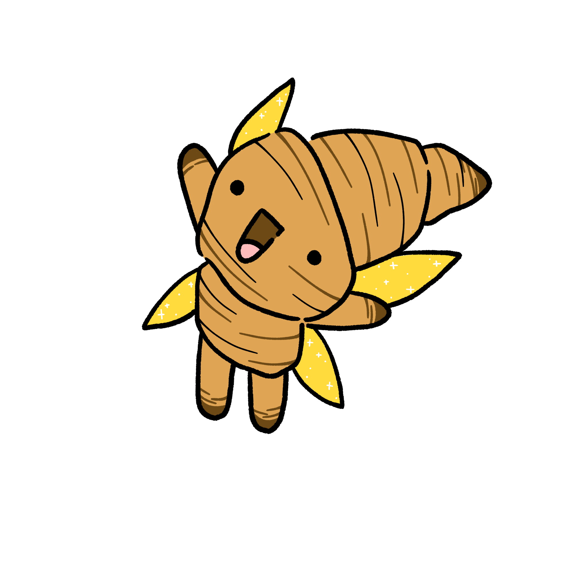

Cassy the Croissant
June 19 - Age: Croissant
ENFP - 3.5 inches (88.9 mm)
Home: Butter Pines
Gender:Female


Represents: Happiness
Always happy and loves spreading joy! Loves playing with Lottie and her younger siblings!
Loves being outside!
Cassy doesn’t want anyone to feel sad! She’ll be by your side, even on the darkest days. She hopes she can be a star in your sky that will someday be filled with shinning stars. She’ll shout encouragement and all the positive things you’ve done in your life! Cassy loves asking questions about your favorite topics, shows, or books! She loves learning new things about you and is genuinely interested in what makes you happy.
Cassy was the first fairy I drew up when I was at my lowest with artist block. I had another project with no topic, but one night, I had the sudden urge to make cute little creatures that resembled pastry items. I don’t know why I had that urge, but I’m so glad I did!
This helped me get out of my artist block, start world building again, and even start to draw my other characters! I was so happy!